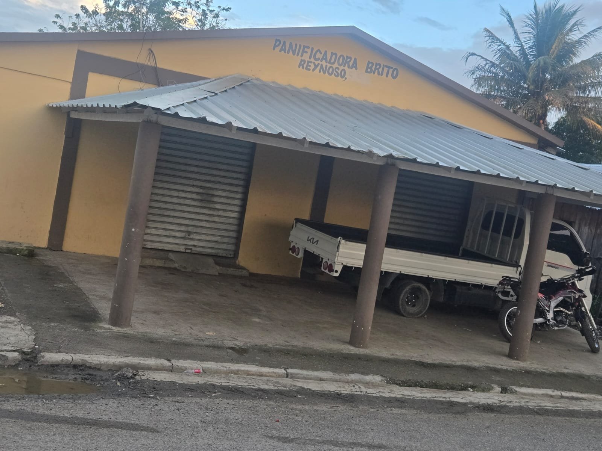
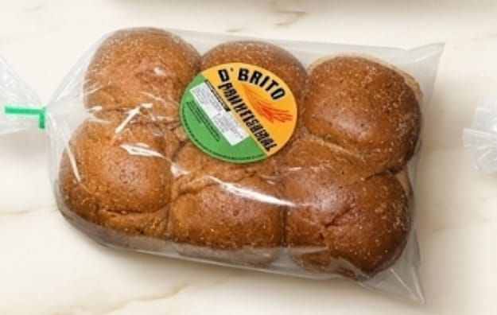
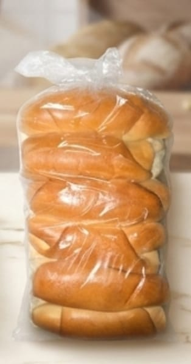
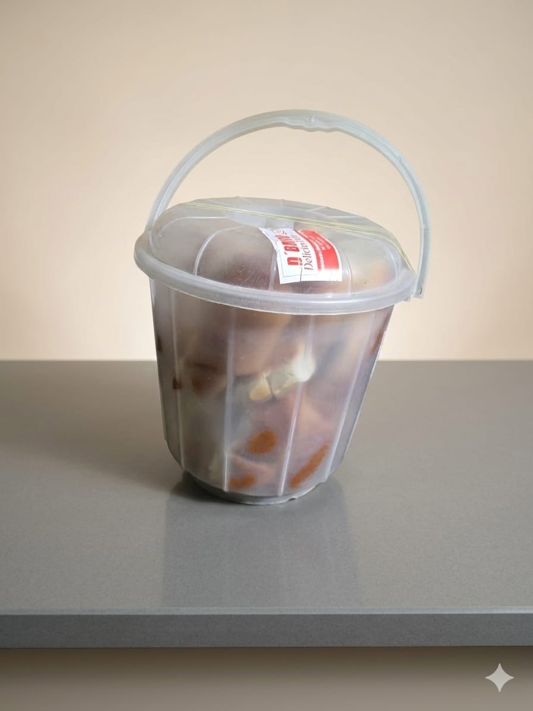
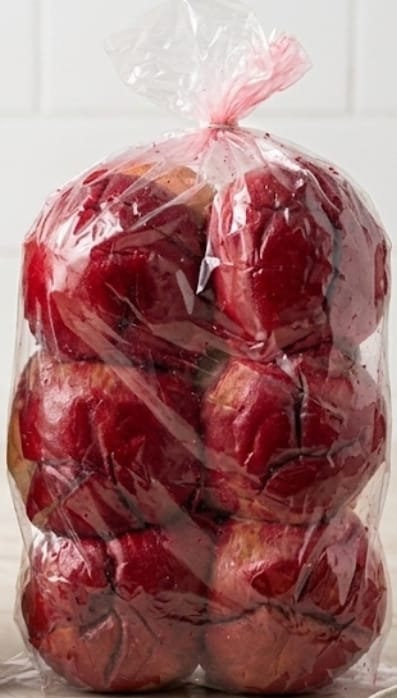
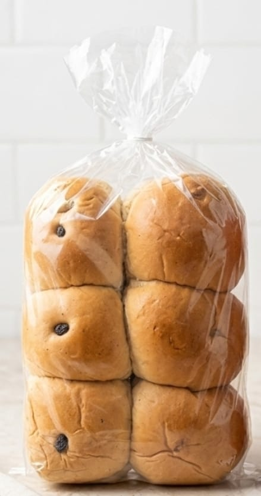
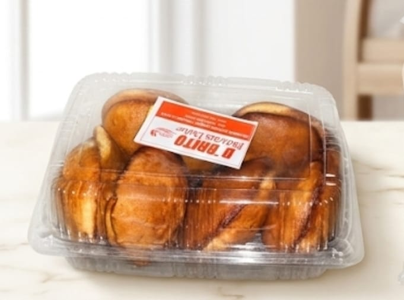
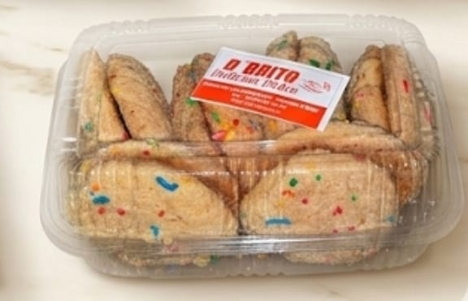
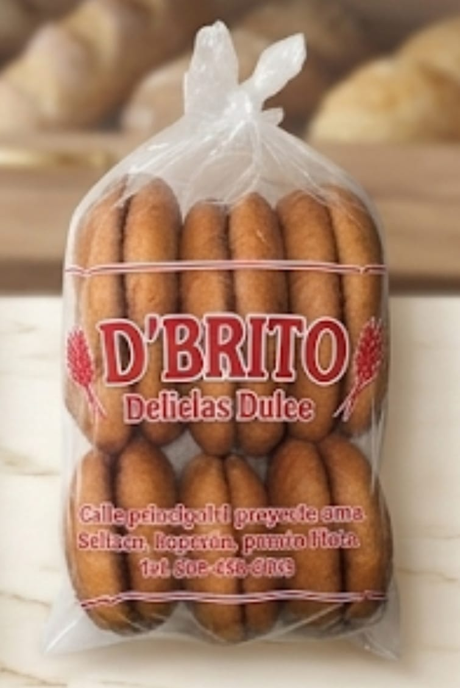

Horneando con los mejores ingredientes naturales y caseros
Mas de 10 años dandole sabor al mercadoAdquirida en 2013 creando productos de calidad desde las 4:00 AM

La Panificadora brito Reynoso paso por varios nombres y dificultades antes de su adquisicion. esta fue adquirida o mejor dicho comprada el 2013 y antes de llamaba Panaderia el castiyo, con el tiempo el nombre cambio por temas de Ubicacion porque antes estaba Hubicada en el castillo alias Isabela historia/luperon pero cuando fue trasladada a el proyecto ama velloso hubicado en luperon su nombre fue cambiado, nuestros productos an cambiado con el tiempo pero eso no quita el echo que seguimos inovando y mejorando dia tras dia.
Actualmente el dueño actual gerbi luis brito batista y Procximo susesor gerbi E. Brito Reynoso hacen todo lo posible para mantener el nogocio a flote
Nuestra mision no es como todas las panaderias, en nuestro caso nosotros enves de tener vendedores propios creamos pan para vendedores de la calle o mejor dicho vendedores amaturs, los cuales de hay generamos nuestras ganancias ya que no somos una panaderia privada si no que somos una empresa publica de compra y venta la cual le vendemos panes y productos con nuestras recetas propiasm a demas panaderias.
Nuestra vusion es implementar una venta libre no dependiente de nuestros equipos y vehiculos ya que al ser una panaderia libre no nesesitamos depender de vendedores locales lo cual nos hace tener mallor competencia y mejor demanda al poder albarcar muchas sonas de luperon y puerto plata
Procutos horneados los Lunes,miercoles,jueves y sabados, los cuales vendemos siempre frescos

El producto mas antiguo como tambien nuesto producto estrella el cual tiene mas de 10 años en el mercado
Precio actual: 90$RD
El pan mantequilla es uno de nustros mallores logros al punto que vendemos hasta 500 fundas a la semana, es rico,natural y sobretodo artesanal
Precio actual: 95$RD
estas cubetas contienen 2 fundas de pan mantequilla pero lo que las hace especial es su precio comodo y su facilidad en venta del mercado
precio actual: 190$RD
Este pan es un producto reciente el cual aunque no lo hagamos en grandes cantidades es RICO y sobre todo adictivo
Precio actual: 90$RD
el pan dulse normal es de nuestros prductos mas lonjevos el cual tiene una passa como sinonimo es rico y sobretodo esponjoso
Precio actual: 90$RD
este producto esta echo 70% de coco natural el cual le da un sabor y textura jugosa y empalagsoa para el paladar
Precio actual: 85$RD
estas riquisimas tabletas sucaradas tienen chismas y como lo dice su nombre mucha asucar, estas son perfectas si las acompañas con una cocacola XD
Precio actual: 85$RD
estas tabletas estan echas con 30% de miel y 40% de melasa de abeja pura y consentrada importada desde santiago, este es un producto estrella el cual emos dominado el mercado nacional un 15%
precio historico 50$RDIngredientes 100% naturales productos echos con las normas de igiene nacional
Nuestra comunidad se basa en la creacion de alimentos echos para todo publico
Cada pan es creado a mano, nuestra maquinaria se basa mas en la facilidad para crear este mismo.
"Trabajo,empeño y sacrificio"— Gerbi Luis Brito Batista y Dorca reynoso De Brito - adquisidorres desde el 2013